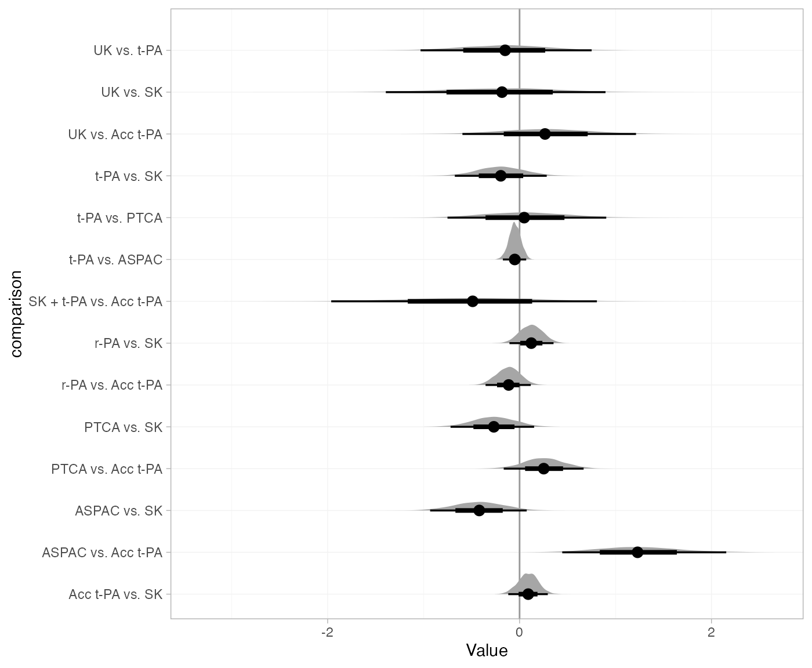
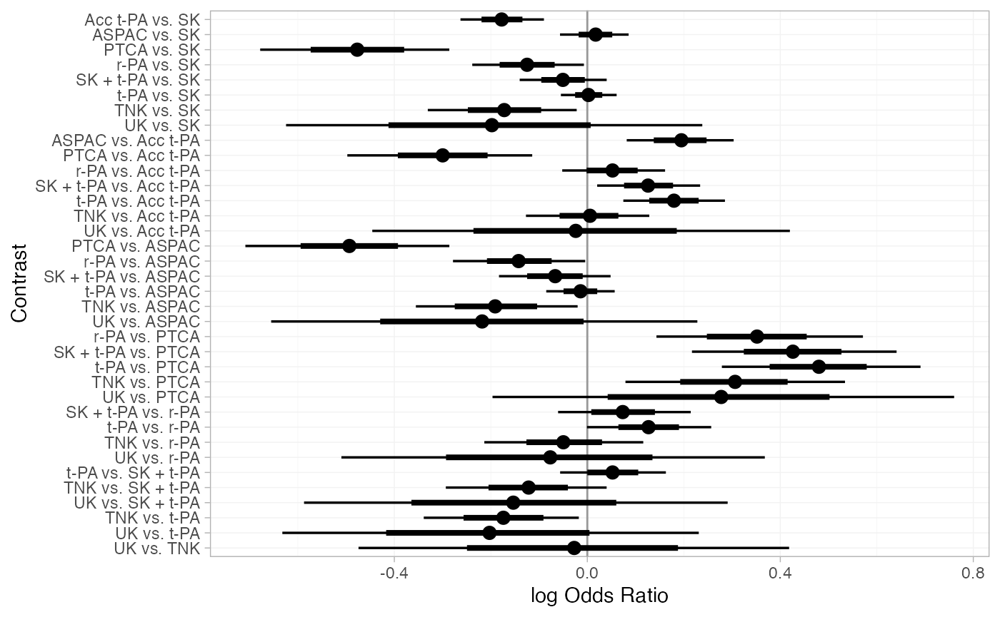

Example: Thrombolytic treatments
Source:vignettes/example_thrombolytics.Rmd
example_thrombolytics.Rmd
library(multinma)
options(mc.cores = parallel::detectCores())#> For execution on a local, multicore CPU with excess RAM we recommend calling
#> options(mc.cores = parallel::detectCores())
#>
#> Attaching package: 'multinma'
#> The following objects are masked from 'package:stats':
#>
#> dgamma, pgamma, qgammaThis vignette describes the analysis of 50 trials of 8 thrombolytic drugs (streptokinase, SK; alteplase, t-PA; accelerated alteplase, Acc t-PA; streptokinase plus alteplase, SK+tPA; reteplase, r-PA; tenocteplase, TNK; urokinase, UK; anistreptilase, ASPAC) plus per-cutaneous transluminal coronary angioplasty (PTCA) (Boland et al. 2003; Lu and Ades 2006; Dias et al. 2011, 2010). The number of deaths in 30 or 35 days following acute myocardial infarction are recorded. The data are available in this package as thrombolytics:
head(thrombolytics)
#> studyn trtn trtc r n
#> 1 1 1 SK 1472 20251
#> 2 1 3 Acc t-PA 652 10396
#> 3 1 4 SK + t-PA 723 10374
#> 4 2 1 SK 9 130
#> 5 2 2 t-PA 6 123
#> 6 3 1 SK 5 63Setting up the network
We begin by setting up the network. We have arm-level count data giving the number of deaths (r) out of the total (n) in each arm, so we use the function set_agd_arm(). By default, SK is set as the network reference treatment.
thrombo_net <- set_agd_arm(thrombolytics,
study = studyn,
trt = trtc,
r = r,
n = n)
thrombo_net
#> A network with 50 AgD studies (arm-based).
#>
#> ------------------------------------------------------- AgD studies (arm-based) ----
#> Study Treatments
#> 1 3: SK | Acc t-PA | SK + t-PA
#> 2 2: SK | t-PA
#> 3 2: SK | t-PA
#> 4 2: SK | t-PA
#> 5 2: SK | t-PA
#> 6 3: SK | t-PA | ASPAC
#> 7 2: SK | t-PA
#> 8 2: SK | t-PA
#> 9 2: SK | t-PA
#> 10 2: SK | SK + t-PA
#> ... plus 40 more studies
#>
#> Outcome type: count
#> ------------------------------------------------------------------------------------
#> Total number of treatments: 9
#> Total number of studies: 50
#> Reference treatment is: SK
#> Network is connectedPlot the network structure.
plot(thrombo_net, weight_edges = TRUE, weight_nodes = TRUE)
Fixed effects NMA
Following TSD 4 (Dias et al. 2011), we fit a fixed effects NMA model, using the nma() function with trt_effects = "fixed". We use \(\mathrm{N}(0, 100^2)\) prior distributions for the treatment effects \(d_k\) and study-specific intercepts \(\mu_j\). We can examine the range of parameter values implied by these prior distributions with the summary() method:
summary(normal(scale = 100))
#> A Normal prior distribution: location = 0, scale = 100.
#> 50% of the prior density lies between -67.45 and 67.45.
#> 95% of the prior density lies between -196 and 196.The model is fitted using the nma() function. By default, this will use a Binomial likelihood and a logit link function, auto-detected from the data.
thrombo_fit <- nma(thrombo_net,
trt_effects = "fixed",
prior_intercept = normal(scale = 100),
prior_trt = normal(scale = 100))
#> Note: Setting "SK" as the network reference treatment.Basic parameter summaries are given by the print() method:
thrombo_fit
#> A fixed effects NMA with a binomial likelihood (logit link).
#> Inference for Stan model: binomial_1par.
#> 4 chains, each with iter=2000; warmup=1000; thin=1;
#> post-warmup draws per chain=1000, total post-warmup draws=4000.
#>
#> mean se_mean sd 2.5% 25% 50% 75% 97.5% n_eff
#> d[Acc t-PA] -0.18 0.00 0.04 -0.26 -0.21 -0.18 -0.15 -0.10 2845
#> d[ASPAC] 0.02 0.00 0.04 -0.06 -0.01 0.02 0.04 0.09 5159
#> d[PTCA] -0.48 0.00 0.10 -0.68 -0.54 -0.48 -0.41 -0.28 4329
#> d[r-PA] -0.13 0.00 0.06 -0.24 -0.16 -0.12 -0.09 -0.01 4113
#> d[SK + t-PA] -0.05 0.00 0.05 -0.14 -0.08 -0.05 -0.02 0.04 5886
#> d[t-PA] 0.00 0.00 0.03 -0.06 -0.02 0.00 0.02 0.06 5128
#> d[TNK] -0.17 0.00 0.08 -0.32 -0.23 -0.17 -0.12 -0.02 4538
#> d[UK] -0.20 0.00 0.23 -0.65 -0.35 -0.20 -0.05 0.25 4747
#> lp__ -43042.96 0.15 5.42 -43054.63 -43046.36 -43042.66 -43039.22 -43033.23 1282
#> Rhat
#> d[Acc t-PA] 1
#> d[ASPAC] 1
#> d[PTCA] 1
#> d[r-PA] 1
#> d[SK + t-PA] 1
#> d[t-PA] 1
#> d[TNK] 1
#> d[UK] 1
#> lp__ 1
#>
#> Samples were drawn using NUTS(diag_e) at Sat Jan 8 17:50:11 2022.
#> For each parameter, n_eff is a crude measure of effective sample size,
#> and Rhat is the potential scale reduction factor on split chains (at
#> convergence, Rhat=1).By default, summaries of the study-specific intercepts \(\mu_j\) are hidden, but could be examined by changing the pars argument:
The prior and posterior distributions can be compared visually using the plot_prior_posterior() function:
plot_prior_posterior(thrombo_fit, prior = "trt")
Model fit can be checked using the dic() function
(dic_consistency <- dic(thrombo_fit))
#> Residual deviance: 106.1 (on 102 data points)
#> pD: 58.9
#> DIC: 165and the residual deviance contributions examined with the corresponding plot() method.
plot(dic_consistency)
There are a number of points which are not very well fit by the model, having posterior mean residual deviance contributions greater than 1.
Checking for inconsistency
Note: The results of the inconsistency models here are slightly different to those of Dias et al. (2010, 2011), although the overall conclusions are the same. This is due to the presence of multi-arm trials and a different ordering of treatments, meaning that inconsistency is parameterised differently within the multi-arm trials. The same results as Dias et al. are obtained if the network is instead set up with
trtnas the treatment variable.
Unrelated mean effects model
We first fit an unrelated mean effects (UME) model (Dias et al. 2011) to assess the consistency assumption. Again, we use the function nma(), but now with the argument consistency = "ume".
thrombo_fit_ume <- nma(thrombo_net,
consistency = "ume",
trt_effects = "fixed",
prior_intercept = normal(scale = 100),
prior_trt = normal(scale = 100))
#> Note: Setting "SK" as the network reference treatment.
thrombo_fit_ume
#> A fixed effects NMA with a binomial likelihood (logit link).
#> An inconsistency model ('ume') was fitted.
#> Inference for Stan model: binomial_1par.
#> 4 chains, each with iter=2000; warmup=1000; thin=1;
#> post-warmup draws per chain=1000, total post-warmup draws=4000.
#>
#> mean se_mean sd 2.5% 25% 50% 75% 97.5%
#> d[Acc t-PA vs. SK] -0.16 0.00 0.05 -0.25 -0.19 -0.16 -0.12 -0.06
#> d[ASPAC vs. SK] 0.01 0.00 0.04 -0.07 -0.02 0.01 0.03 0.08
#> d[PTCA vs. SK] -0.67 0.00 0.19 -1.04 -0.79 -0.67 -0.54 -0.31
#> d[r-PA vs. SK] -0.06 0.00 0.09 -0.24 -0.12 -0.06 0.00 0.11
#> d[SK + t-PA vs. SK] -0.04 0.00 0.05 -0.13 -0.08 -0.04 -0.01 0.05
#> d[t-PA vs. SK] 0.00 0.00 0.03 -0.06 -0.02 0.00 0.02 0.06
#> d[UK vs. SK] -0.37 0.01 0.50 -1.40 -0.70 -0.36 -0.03 0.58
#> d[ASPAC vs. Acc t-PA] 1.40 0.01 0.41 0.63 1.11 1.39 1.67 2.26
#> d[PTCA vs. Acc t-PA] -0.22 0.00 0.12 -0.44 -0.30 -0.21 -0.14 0.01
#> d[r-PA vs. Acc t-PA] 0.02 0.00 0.07 -0.10 -0.03 0.02 0.07 0.15
#> d[TNK vs. Acc t-PA] 0.01 0.00 0.07 -0.13 -0.04 0.01 0.05 0.13
#> d[UK vs. Acc t-PA] 0.14 0.01 0.36 -0.55 -0.11 0.14 0.39 0.86
#> d[t-PA vs. ASPAC] 0.29 0.01 0.37 -0.42 0.04 0.29 0.54 1.04
#> d[t-PA vs. PTCA] 0.56 0.01 0.42 -0.24 0.27 0.55 0.84 1.37
#> d[UK vs. t-PA] -0.29 0.01 0.34 -0.95 -0.53 -0.30 -0.06 0.38
#> lp__ -43039.89 0.15 5.75 -43051.71 -43043.63 -43039.65 -43035.83 -43029.57
#> n_eff Rhat
#> d[Acc t-PA vs. SK] 4788 1
#> d[ASPAC vs. SK] 4384 1
#> d[PTCA vs. SK] 4439 1
#> d[r-PA vs. SK] 5027 1
#> d[SK + t-PA vs. SK] 4539 1
#> d[t-PA vs. SK] 3635 1
#> d[UK vs. SK] 4747 1
#> d[ASPAC vs. Acc t-PA] 2954 1
#> d[PTCA vs. Acc t-PA] 4184 1
#> d[r-PA vs. Acc t-PA] 3994 1
#> d[TNK vs. Acc t-PA] 4737 1
#> d[UK vs. Acc t-PA] 3473 1
#> d[t-PA vs. ASPAC] 3876 1
#> d[t-PA vs. PTCA] 3508 1
#> d[UK vs. t-PA] 4473 1
#> lp__ 1485 1
#>
#> Samples were drawn using NUTS(diag_e) at Sat Jan 8 17:50:26 2022.
#> For each parameter, n_eff is a crude measure of effective sample size,
#> and Rhat is the potential scale reduction factor on split chains (at
#> convergence, Rhat=1).Comparing the model fit statistics
dic_consistency
#> Residual deviance: 106.1 (on 102 data points)
#> pD: 58.9
#> DIC: 165
(dic_ume <- dic(thrombo_fit_ume))
#> Residual deviance: 99.9 (on 102 data points)
#> pD: 66.2
#> DIC: 166.2Whilst the UME model fits the data better, having a lower residual deviance, the additional parameters in the UME model mean that the DIC is very similar between both models. However, it is also important to examine the individual contributions to model fit of each data point under the two models (a so-called “dev-dev” plot). Passing two nma_dic objects produced by the dic() function to the plot() method produces this dev-dev plot:
plot(dic_consistency, dic_ume, show_uncertainty = FALSE)
The four points lying in the lower right corner of the plot have much lower posterior mean residual deviance under the UME model, indicating that these data are potentially inconsistent. These points correspond to trials 44 and 45, the only two trials comparing Acc t-PA to ASPAC. The ASPAC vs. Acc t-PA estimates are very different under the consistency model and inconsistency (UME) model, suggesting that these two trials may be systematically different from the others in the network.
Node-splitting
Another method for assessing inconsistency is node-splitting (Dias et al. 2011, 2010). Whereas the UME model assesses inconsistency globally, node-splitting assesses inconsistency locally for each potentially inconsistent comparison (those with both direct and indirect evidence) in turn.
Node-splitting can be performed using the nma() function with the argument consistency = "nodesplit". By default, all possible comparisons will be split (as determined by the get_nodesplits() function). Alternatively, a specific comparison or comparisons to split can be provided to the nodesplit argument.
thrombo_nodesplit <- nma(thrombo_net,
consistency = "nodesplit",
trt_effects = "fixed",
prior_intercept = normal(scale = 100),
prior_trt = normal(scale = 100))
#> Fitting model 1 of 15, node-split: Acc t-PA vs. SK
#> Note: Setting "SK" as the network reference treatment.
#> Fitting model 2 of 15, node-split: ASPAC vs. SK
#> Note: Setting "SK" as the network reference treatment.
#> Fitting model 3 of 15, node-split: PTCA vs. SK
#> Note: Setting "SK" as the network reference treatment.
#> Fitting model 4 of 15, node-split: r-PA vs. SK
#> Note: Setting "SK" as the network reference treatment.
#> Fitting model 5 of 15, node-split: t-PA vs. SK
#> Note: Setting "SK" as the network reference treatment.
#> Fitting model 6 of 15, node-split: UK vs. SK
#> Note: Setting "SK" as the network reference treatment.
#> Fitting model 7 of 15, node-split: ASPAC vs. Acc t-PA
#> Note: Setting "SK" as the network reference treatment.
#> Fitting model 8 of 15, node-split: PTCA vs. Acc t-PA
#> Note: Setting "SK" as the network reference treatment.
#> Fitting model 9 of 15, node-split: r-PA vs. Acc t-PA
#> Note: Setting "SK" as the network reference treatment.
#> Fitting model 10 of 15, node-split: SK + t-PA vs. Acc t-PA
#> Note: Setting "SK" as the network reference treatment.
#> Fitting model 11 of 15, node-split: UK vs. Acc t-PA
#> Note: Setting "SK" as the network reference treatment.
#> Fitting model 12 of 15, node-split: t-PA vs. ASPAC
#> Note: Setting "SK" as the network reference treatment.
#> Fitting model 13 of 15, node-split: t-PA vs. PTCA
#> Note: Setting "SK" as the network reference treatment.
#> Fitting model 14 of 15, node-split: UK vs. t-PA
#> Note: Setting "SK" as the network reference treatment.
#> Fitting model 15 of 15, consistency model
#> Note: Setting "SK" as the network reference treatment.The summary() method summarises the node-splitting results, displaying the direct and indirect estimates \(d_\mathrm{dir}\) and \(d_\mathrm{ind}\) from each node-split model, the network estimate \(d_\mathrm{net}\) from the consistency model, the inconsistency factor \(\omega = d_\mathrm{dir} - d_\mathrm{ind}\), and a Bayesian \(p\)-value for inconsistency on each comparison. The DIC model fit statistics are also provided. (If a random effects model was fitted, the heterogeneity standard deviation \(tau\) under each node-split model and under the consistency model would also be displayed.)
summary(thrombo_nodesplit)
#> Node-splitting models fitted for 14 comparisons.
#>
#> ---------------------------------------------------- Node-split Acc t-PA vs. SK ----
#>
#> mean sd 2.5% 25% 50% 75% 97.5% Bulk_ESS Tail_ESS Rhat
#> d_net -0.18 0.04 -0.27 -0.21 -0.18 -0.15 -0.09 2545 3143 1
#> d_dir -0.16 0.05 -0.25 -0.19 -0.16 -0.13 -0.06 3757 3877 1
#> d_ind -0.24 0.09 -0.41 -0.30 -0.25 -0.18 -0.06 639 1130 1
#> omega 0.08 0.10 -0.13 0.02 0.09 0.15 0.28 733 1431 1
#>
#> Residual deviance: 106.1 (on 102 data points)
#> pD: 59.6
#> DIC: 165.7
#>
#> Bayesian p-value: 0.41
#>
#> ------------------------------------------------------- Node-split ASPAC vs. SK ----
#>
#> mean sd 2.5% 25% 50% 75% 97.5% Bulk_ESS Tail_ESS Rhat
#> d_net 0.02 0.04 -0.06 -0.01 0.02 0.04 0.09 5312 3702 1
#> d_dir 0.01 0.04 -0.06 -0.02 0.01 0.03 0.08 4447 3619 1
#> d_ind 0.41 0.25 -0.07 0.25 0.41 0.58 0.92 2233 2426 1
#> omega -0.41 0.25 -0.93 -0.57 -0.40 -0.24 0.09 2275 2539 1
#>
#> Residual deviance: 104.3 (on 102 data points)
#> pD: 59.7
#> DIC: 164.1
#>
#> Bayesian p-value: 0.11
#>
#> -------------------------------------------------------- Node-split PTCA vs. SK ----
#>
#> mean sd 2.5% 25% 50% 75% 97.5% Bulk_ESS Tail_ESS Rhat
#> d_net -0.47 0.10 -0.67 -0.54 -0.48 -0.41 -0.27 3883 2841 1
#> d_dir -0.67 0.18 -1.03 -0.79 -0.66 -0.54 -0.32 5661 3732 1
#> d_ind -0.40 0.12 -0.64 -0.48 -0.40 -0.31 -0.16 3653 2999 1
#> omega -0.27 0.22 -0.71 -0.42 -0.26 -0.12 0.16 4643 3494 1
#>
#> Residual deviance: 105.3 (on 102 data points)
#> pD: 59.6
#> DIC: 164.8
#>
#> Bayesian p-value: 0.21
#>
#> -------------------------------------------------------- Node-split r-PA vs. SK ----
#>
#> mean sd 2.5% 25% 50% 75% 97.5% Bulk_ESS Tail_ESS Rhat
#> d_net -0.12 0.06 -0.24 -0.16 -0.12 -0.08 -0.01 3345 3277 1
#> d_dir -0.06 0.09 -0.24 -0.12 -0.06 0.00 0.12 4999 3661 1
#> d_ind -0.18 0.08 -0.33 -0.23 -0.18 -0.12 -0.02 2316 2873 1
#> omega 0.12 0.12 -0.12 0.04 0.12 0.20 0.35 2797 3229 1
#>
#> Residual deviance: 106.1 (on 102 data points)
#> pD: 59.8
#> DIC: 165.9
#>
#> Bayesian p-value: 0.34
#>
#> -------------------------------------------------------- Node-split t-PA vs. SK ----
#>
#> mean sd 2.5% 25% 50% 75% 97.5% Bulk_ESS Tail_ESS Rhat
#> d_net 0.00 0.03 -0.06 -0.02 0.00 0.02 0.06 4436 3125 1
#> d_dir 0.00 0.03 -0.06 -0.02 0.00 0.02 0.06 3984 3481 1
#> d_ind 0.19 0.23 -0.26 0.03 0.19 0.34 0.65 1300 2257 1
#> omega -0.19 0.23 -0.66 -0.35 -0.19 -0.03 0.26 1299 2374 1
#>
#> Residual deviance: 106.3 (on 102 data points)
#> pD: 59.8
#> DIC: 166.1
#>
#> Bayesian p-value: 0.43
#>
#> ---------------------------------------------------------- Node-split UK vs. SK ----
#>
#> mean sd 2.5% 25% 50% 75% 97.5% Bulk_ESS Tail_ESS Rhat
#> d_net -0.20 0.22 -0.65 -0.36 -0.20 -0.05 0.22 4777 3365 1
#> d_dir -0.37 0.51 -1.38 -0.70 -0.37 -0.03 0.63 6190 3288 1
#> d_ind -0.16 0.24 -0.64 -0.34 -0.16 0.00 0.31 4515 2996 1
#> omega -0.20 0.57 -1.37 -0.58 -0.20 0.17 0.91 5652 3243 1
#>
#> Residual deviance: 106.5 (on 102 data points)
#> pD: 59.4
#> DIC: 165.9
#>
#> Bayesian p-value: 0.72
#>
#> ------------------------------------------------- Node-split ASPAC vs. Acc t-PA ----
#>
#> mean sd 2.5% 25% 50% 75% 97.5% Bulk_ESS Tail_ESS Rhat
#> d_net 0.19 0.06 0.08 0.16 0.19 0.23 0.30 3347 3434 1
#> d_dir 1.40 0.41 0.64 1.11 1.39 1.67 2.22 3843 3295 1
#> d_ind 0.16 0.06 0.05 0.13 0.17 0.20 0.27 3214 3311 1
#> omega 1.23 0.41 0.46 0.95 1.22 1.51 2.06 3672 2961 1
#>
#> Residual deviance: 96.4 (on 102 data points)
#> pD: 59.3
#> DIC: 155.8
#>
#> Bayesian p-value: <0.01
#>
#> -------------------------------------------------- Node-split PTCA vs. Acc t-PA ----
#>
#> mean sd 2.5% 25% 50% 75% 97.5% Bulk_ESS Tail_ESS Rhat
#> d_net -0.30 0.10 -0.49 -0.36 -0.30 -0.23 -0.11 5483 3273 1
#> d_dir -0.21 0.12 -0.44 -0.29 -0.21 -0.13 0.02 5005 3361 1
#> d_ind -0.47 0.18 -0.82 -0.59 -0.47 -0.36 -0.12 3404 2679 1
#> omega 0.26 0.21 -0.15 0.12 0.26 0.40 0.68 3381 3235 1
#>
#> Residual deviance: 105.5 (on 102 data points)
#> pD: 59.8
#> DIC: 165.4
#>
#> Bayesian p-value: 0.21
#>
#> -------------------------------------------------- Node-split r-PA vs. Acc t-PA ----
#>
#> mean sd 2.5% 25% 50% 75% 97.5% Bulk_ESS Tail_ESS Rhat
#> d_net 0.05 0.06 -0.05 0.02 0.05 0.09 0.16 6077 2994 1
#> d_dir 0.02 0.07 -0.11 -0.02 0.02 0.07 0.15 4618 3443 1
#> d_ind 0.14 0.10 -0.06 0.07 0.13 0.21 0.34 1976 2719 1
#> omega -0.11 0.12 -0.35 -0.19 -0.12 -0.03 0.13 1981 2408 1
#>
#> Residual deviance: 106.1 (on 102 data points)
#> pD: 59.8
#> DIC: 165.9
#>
#> Bayesian p-value: 0.35
#>
#> --------------------------------------------- Node-split SK + t-PA vs. Acc t-PA ----
#>
#> mean sd 2.5% 25% 50% 75% 97.5% Bulk_ESS Tail_ESS Rhat
#> d_net 0.13 0.05 0.02 0.09 0.13 0.17 0.23 5379 3320 1
#> d_dir 0.13 0.05 0.02 0.09 0.13 0.16 0.23 3621 3472 1
#> d_ind 0.62 0.71 -0.75 0.16 0.60 1.09 2.07 3437 2434 1
#> omega -0.50 0.71 -1.94 -0.96 -0.47 -0.02 0.87 3433 2496 1
#>
#> Residual deviance: 106.3 (on 102 data points)
#> pD: 59.6
#> DIC: 165.9
#>
#> Bayesian p-value: 0.48
#>
#> ---------------------------------------------------- Node-split UK vs. Acc t-PA ----
#>
#> mean sd 2.5% 25% 50% 75% 97.5% Bulk_ESS Tail_ESS Rhat
#> d_net -0.03 0.22 -0.47 -0.18 -0.02 0.13 0.40 4919 3126 1
#> d_dir 0.14 0.36 -0.55 -0.09 0.14 0.38 0.85 5285 3185 1
#> d_ind -0.13 0.29 -0.70 -0.33 -0.13 0.07 0.41 4507 3207 1
#> omega 0.28 0.46 -0.62 -0.02 0.28 0.58 1.17 4172 3452 1
#>
#> Residual deviance: 106.5 (on 102 data points)
#> pD: 59.7
#> DIC: 166.2
#>
#> Bayesian p-value: 0.53
#>
#> ----------------------------------------------------- Node-split t-PA vs. ASPAC ----
#>
#> mean sd 2.5% 25% 50% 75% 97.5% Bulk_ESS Tail_ESS Rhat
#> d_net -0.01 0.04 -0.08 -0.04 -0.01 0.01 0.06 8158 3609 1
#> d_dir -0.02 0.04 -0.10 -0.05 -0.02 0.00 0.05 4840 3196 1
#> d_ind 0.02 0.06 -0.09 -0.02 0.02 0.07 0.15 3513 3298 1
#> omega -0.05 0.06 -0.17 -0.09 -0.05 -0.01 0.07 3550 3468 1
#>
#> Residual deviance: 106.3 (on 102 data points)
#> pD: 59.8
#> DIC: 166.1
#>
#> Bayesian p-value: 0.45
#>
#> ------------------------------------------------------ Node-split t-PA vs. PTCA ----
#>
#> mean sd 2.5% 25% 50% 75% 97.5% Bulk_ESS Tail_ESS Rhat
#> d_net 0.48 0.11 0.27 0.41 0.48 0.55 0.68 4008 3026 1
#> d_dir 0.54 0.43 -0.27 0.25 0.53 0.82 1.39 5136 3178 1
#> d_ind 0.47 0.11 0.27 0.40 0.47 0.55 0.68 3561 3395 1
#> omega 0.07 0.44 -0.76 -0.22 0.06 0.35 0.94 4299 3124 1
#>
#> Residual deviance: 106.8 (on 102 data points)
#> pD: 59.7
#> DIC: 166.5
#>
#> Bayesian p-value: 0.89
#>
#> -------------------------------------------------------- Node-split UK vs. t-PA ----
#>
#> mean sd 2.5% 25% 50% 75% 97.5% Bulk_ESS Tail_ESS Rhat
#> d_net -0.21 0.22 -0.64 -0.36 -0.20 -0.05 0.23 4900 3445 1
#> d_dir -0.30 0.34 -0.98 -0.52 -0.30 -0.07 0.36 5822 3744 1
#> d_ind -0.14 0.29 -0.71 -0.34 -0.14 0.06 0.43 4054 3392 1
#> omega -0.16 0.45 -1.07 -0.46 -0.14 0.15 0.72 4873 3176 1
#>
#> Residual deviance: 106.8 (on 102 data points)
#> pD: 59.7
#> DIC: 166.5
#>
#> Bayesian p-value: 0.73Node-splitting the ASPAC vs. Acc t-PA comparison results the lowest DIC, and this is lower than the consistency model. The posterior distribution for the inconsistency factor \(\omega\) for this comparison lies far from 0 and the Bayesian \(p\)-value for inconsistency is small (< 0.01), meaning that there is substantial disagreement between the direct and indirect evidence on this comparison.
We can visually compare the direct, indirect, and network estimates using the plot() method.
plot(thrombo_nodesplit)
We can also plot the posterior distributions of the inconsistency factors \(\omega\), again using the plot() method. Here, we specify a “halfeye” plot of the posterior density with median and credible intervals, and customise the plot layout with standard ggplot2 functions.
plot(thrombo_nodesplit, pars = "omega", stat = "halfeye", ref_line = 0) +
ggplot2::aes(y = comparison) +
ggplot2::facet_null()
Notice again that the posterior distribution of the inconsistency factor for the ASPAC vs. Acc t-PA comparison lies far from 0, indicating substantial inconsistency between the direct and indirect evidence on this comparison.
Further results
Relative effects for all pairwise contrasts between treatments can be produced using the relative_effects() function, with all_contrasts = TRUE.
(thrombo_releff <- relative_effects(thrombo_fit, all_contrasts = TRUE))
#> mean sd 2.5% 25% 50% 75% 97.5% Bulk_ESS Tail_ESS Rhat
#> d[Acc t-PA vs. SK] -0.18 0.04 -0.26 -0.21 -0.18 -0.15 -0.10 2845 3245 1
#> d[ASPAC vs. SK] 0.02 0.04 -0.06 -0.01 0.02 0.04 0.09 5217 3148 1
#> d[PTCA vs. SK] -0.48 0.10 -0.68 -0.54 -0.48 -0.41 -0.28 4357 3221 1
#> d[r-PA vs. SK] -0.13 0.06 -0.24 -0.16 -0.12 -0.09 -0.01 4134 3537 1
#> d[SK + t-PA vs. SK] -0.05 0.05 -0.14 -0.08 -0.05 -0.02 0.04 5830 3218 1
#> d[t-PA vs. SK] 0.00 0.03 -0.06 -0.02 0.00 0.02 0.06 4862 3758 1
#> d[TNK vs. SK] -0.17 0.08 -0.32 -0.23 -0.17 -0.12 -0.02 4464 3715 1
#> d[UK vs. SK] -0.20 0.23 -0.65 -0.35 -0.20 -0.05 0.25 4794 3322 1
#> d[ASPAC vs. Acc t-PA] 0.19 0.05 0.09 0.16 0.19 0.23 0.30 3529 3470 1
#> d[PTCA vs. Acc t-PA] -0.30 0.10 -0.49 -0.36 -0.30 -0.23 -0.10 6068 3678 1
#> d[r-PA vs. Acc t-PA] 0.05 0.06 -0.05 0.02 0.05 0.09 0.16 5507 3412 1
#> d[SK + t-PA vs. Acc t-PA] 0.13 0.05 0.03 0.09 0.13 0.17 0.24 5599 3601 1
#> d[t-PA vs. Acc t-PA] 0.18 0.05 0.08 0.14 0.18 0.22 0.28 3299 3304 1
#> d[TNK vs. Acc t-PA] 0.01 0.06 -0.12 -0.04 0.00 0.05 0.14 5809 3597 1
#> d[UK vs. Acc t-PA] -0.02 0.23 -0.46 -0.17 -0.02 0.13 0.44 4909 3505 1
#> d[PTCA vs. ASPAC] -0.49 0.11 -0.70 -0.56 -0.49 -0.42 -0.29 4397 3486 1
#> d[r-PA vs. ASPAC] -0.14 0.07 -0.28 -0.19 -0.14 -0.09 -0.01 4258 3523 1
#> d[SK + t-PA vs. ASPAC] -0.07 0.06 -0.18 -0.10 -0.07 -0.03 0.05 5602 3564 1
#> d[t-PA vs. ASPAC] -0.01 0.04 -0.09 -0.04 -0.02 0.01 0.06 7014 3580 1
#> d[TNK vs. ASPAC] -0.19 0.08 -0.36 -0.25 -0.19 -0.13 -0.02 4567 3362 1
#> d[UK vs. ASPAC] -0.21 0.23 -0.66 -0.37 -0.21 -0.06 0.24 4799 3455 1
#> d[r-PA vs. PTCA] 0.35 0.11 0.14 0.28 0.35 0.42 0.57 5682 3601 1
#> d[SK + t-PA vs. PTCA] 0.43 0.11 0.21 0.36 0.43 0.50 0.64 5313 3451 1
#> d[t-PA vs. PTCA] 0.48 0.10 0.27 0.41 0.48 0.55 0.69 4382 3349 1
#> d[TNK vs. PTCA] 0.30 0.12 0.07 0.22 0.30 0.39 0.54 7088 3583 1
#> d[UK vs. PTCA] 0.28 0.24 -0.19 0.12 0.28 0.44 0.77 4947 3328 1
#> d[SK + t-PA vs. r-PA] 0.08 0.07 -0.06 0.03 0.08 0.12 0.21 6101 3299 1
#> d[t-PA vs. r-PA] 0.13 0.07 0.00 0.08 0.13 0.17 0.26 4007 3442 1
#> d[TNK vs. r-PA] -0.05 0.09 -0.22 -0.10 -0.05 0.01 0.12 7042 2961 1
#> d[UK vs. r-PA] -0.07 0.23 -0.53 -0.23 -0.07 0.09 0.40 5049 3533 1
#> d[t-PA vs. SK + t-PA] 0.05 0.06 -0.06 0.01 0.05 0.09 0.16 5593 3460 1
#> d[TNK vs. SK + t-PA] -0.12 0.08 -0.29 -0.18 -0.12 -0.07 0.04 6344 3289 1
#> d[UK vs. SK + t-PA] -0.15 0.23 -0.60 -0.30 -0.15 0.01 0.31 4915 3105 1
#> d[TNK vs. t-PA] -0.17 0.08 -0.34 -0.23 -0.17 -0.12 -0.01 4513 3497 1
#> d[UK vs. t-PA] -0.20 0.23 -0.65 -0.35 -0.20 -0.05 0.26 4707 3395 1
#> d[UK vs. TNK] -0.02 0.24 -0.48 -0.18 -0.03 0.14 0.43 4928 3059 1
plot(thrombo_releff, ref_line = 0)
Treatment rankings, rank probabilities, and cumulative rank probabilities.
(thrombo_ranks <- posterior_ranks(thrombo_fit))
#> mean sd 2.5% 25% 50% 75% 97.5% Bulk_ESS Tail_ESS Rhat
#> rank[SK] 7.45 0.95 6 7 7 8 9 3936 NA 1
#> rank[Acc t-PA] 3.18 0.82 2 3 3 4 5 4135 3956 1
#> rank[ASPAC] 8.00 1.10 6 7 8 9 9 4427 NA 1
#> rank[PTCA] 1.13 0.34 1 1 1 1 2 3939 3891 1
#> rank[r-PA] 4.38 1.16 2 4 4 5 7 4624 3816 1
#> rank[SK + t-PA] 5.97 1.22 4 5 6 6 9 5370 NA 1
#> rank[t-PA] 7.45 1.12 5 7 8 8 9 4724 NA 1
#> rank[TNK] 3.46 1.25 2 3 3 4 6 5260 3717 1
#> rank[UK] 3.98 2.74 1 2 3 6 9 4582 NA 1
plot(thrombo_ranks)
(thrombo_rankprobs <- posterior_rank_probs(thrombo_fit))
#> p_rank[1] p_rank[2] p_rank[3] p_rank[4] p_rank[5] p_rank[6] p_rank[7] p_rank[8]
#> d[SK] 0.00 0.00 0.00 0.00 0.02 0.13 0.39 0.32
#> d[Acc t-PA] 0.00 0.21 0.44 0.30 0.04 0.00 0.00 0.00
#> d[ASPAC] 0.00 0.00 0.00 0.00 0.02 0.09 0.18 0.26
#> d[PTCA] 0.87 0.13 0.00 0.00 0.00 0.00 0.00 0.00
#> d[r-PA] 0.00 0.06 0.15 0.30 0.38 0.08 0.01 0.01
#> d[SK + t-PA] 0.00 0.00 0.01 0.06 0.26 0.45 0.09 0.07
#> d[t-PA] 0.00 0.00 0.00 0.00 0.04 0.16 0.29 0.31
#> d[TNK] 0.00 0.24 0.33 0.24 0.14 0.03 0.01 0.01
#> d[UK] 0.13 0.36 0.07 0.08 0.10 0.06 0.02 0.02
#> p_rank[9]
#> d[SK] 0.15
#> d[Acc t-PA] 0.00
#> d[ASPAC] 0.44
#> d[PTCA] 0.00
#> d[r-PA] 0.01
#> d[SK + t-PA] 0.05
#> d[t-PA] 0.20
#> d[TNK] 0.00
#> d[UK] 0.16
plot(thrombo_rankprobs)
(thrombo_cumrankprobs <- posterior_rank_probs(thrombo_fit, cumulative = TRUE))
#> p_rank[1] p_rank[2] p_rank[3] p_rank[4] p_rank[5] p_rank[6] p_rank[7] p_rank[8]
#> d[SK] 0.00 0.00 0.00 0.00 0.02 0.14 0.54 0.85
#> d[Acc t-PA] 0.00 0.21 0.65 0.95 1.00 1.00 1.00 1.00
#> d[ASPAC] 0.00 0.00 0.00 0.00 0.02 0.11 0.30 0.56
#> d[PTCA] 0.87 1.00 1.00 1.00 1.00 1.00 1.00 1.00
#> d[r-PA] 0.00 0.06 0.21 0.51 0.89 0.97 0.99 0.99
#> d[SK + t-PA] 0.00 0.00 0.01 0.08 0.33 0.78 0.88 0.95
#> d[t-PA] 0.00 0.00 0.00 0.01 0.04 0.20 0.49 0.80
#> d[TNK] 0.00 0.24 0.57 0.81 0.95 0.98 0.99 1.00
#> d[UK] 0.13 0.49 0.56 0.64 0.74 0.80 0.82 0.84
#> p_rank[9]
#> d[SK] 1
#> d[Acc t-PA] 1
#> d[ASPAC] 1
#> d[PTCA] 1
#> d[r-PA] 1
#> d[SK + t-PA] 1
#> d[t-PA] 1
#> d[TNK] 1
#> d[UK] 1
plot(thrombo_cumrankprobs)